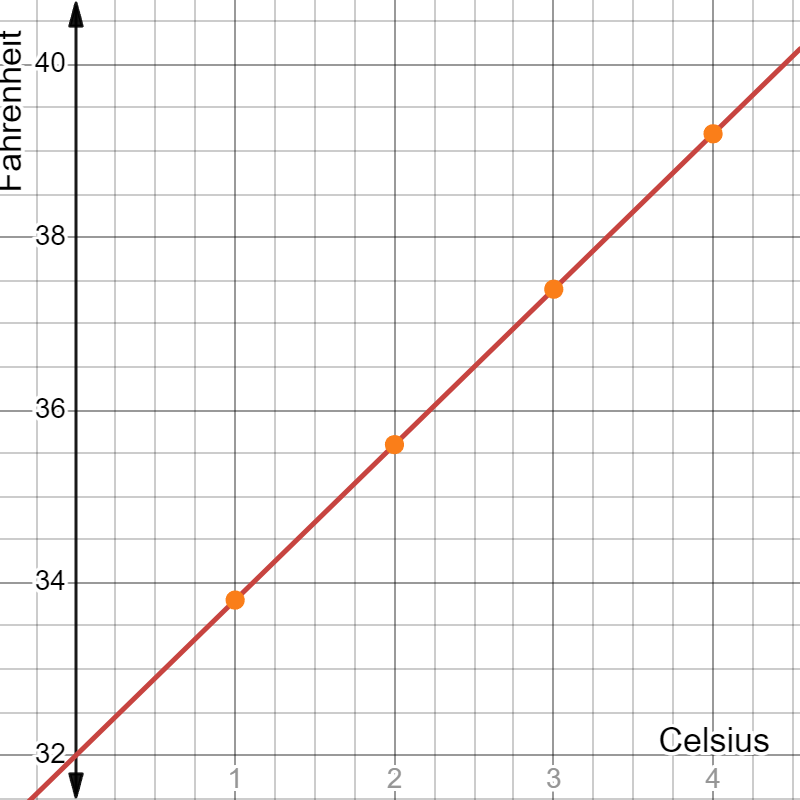

Statsvetenskapliga metoder
Regressionsanalys
Sirus Dehdari
Statsvetenskapliga institutionen, Stockholms universitet
Varför regressionsanalys?
- Vi är ofta intresserade av att undersöka samband mellan olika variabler
- Är arbetslösa medborgare mer benägna att stödja högerradikala partier?
- Är det mindre korruption i demokratiska länder?
- Finns det ett samband mellan inkomst och valdeltagande?
- I generisk form: finns det ett samband mellan variabeln \(X\) och variabeln \(Y\)?
Denna vecka ska vi lära oss följande
- Förstå hur regressionsanalys kan hjälpa oss undersöka dessa typer av samband
- I synnerhet:
- Är sambandet positivt eller negativt (eller finns det inget samband)?
- Hur starkt är sambandet?
- Är det verkligen ett statistiskt signifikant samband?
- Hur mycket av variationen i \(Y\) kan förklaras av \(X\)?
- Kapitel 5.1 i Österman och Folke
- Nästa vecka: vad händer när vi “kontrollerar” för fler variabler (multipel regressionsanalys)
Dagens föreläsning
- Linjära samband
- Regressionslinje
- Passning
- Statistisk signifikans (inferens)
- Tolka regressionsresultat
Inomhustemperatur (igen!)
- Vi är tillbaka på Landsbygds- och infrastrukturdepartementet
- Nu är vi intresserade av att förstå varför vissa hushåll har lägre inomhustemperatur jämfört med andra hushåll
- Någon på departementet föreslår att det finns ett samband mellan inkomst och inomhustemperatur
- Antag att det finns ett linjärt samband mellan dessa två variabler
- Vanligtvis är det enklast att beskriva ett samband mellan två variabler som ett linjärt samband
Konvertera från en enhet till en annan
- Vad är ett linjärt samband?
- Antag att vi hittar ett recept där måtten återges i cups men vi är vana vid att använda ml och dl
- Det finns ett samband mellan cups och t.ex. dl:
\[deciliter = 2{,}366 \times cups\]
- Enligt receptet ska ugnen upp i en viss temperatur, angett i Celsius men du är van vid Fahrenheit:
\[Fahrenheit = 32 + 1{,}8 \times Celsius\]
Exempel: Cups till deciliter

Exempel: Cups till deciliter

Exempel: Cups till deciliter

Linjärt samband
- För varje värde på \(x\)-axeln (cups) får vi ett värde på \(y\)-axeln
- Exempel: När \(cups = 1\) är \(deciliter = 2{,}36588\); när \(cups = 2\) är \(deciliter = 4{,}73176\)
- När \(cups = 0\) är \(deciliter = 0\) (så klart)
- Dock behöver inte \(x = 0\) ge \(y = 0\) hos andra samband
Celsius till Fahrenheit

Celsius till Fahrenheit

Linjär ekvation
- Ett linjärt samband kan beskrivas med en linjär ekvation:
\[y = kx + m\]
- Riktningskoefficienten för linjen ges av \(k\) medan \(m\) är konstanten
- Cups till deciliter: \(m = 0\) och \(k= 2{,}36588\)
- Celsius till Fahrenheit, \(m=32\) och \(k= 1{,}8\)
Linjär ekvation
- Inom statistik använder man en modifierad version
\[y = a + bx\]
- Riktningskoefficienten, även kallat lutningskoefficienten, för linjen ges av \(b\) medan \(a\) är konstanten
- Vi kallar \(y\) för den beroende variabeln medan \(x\) kallas för den oberoende variabeln
- Om \(b\) är större än noll är sambandet positivt
- Om \(b\) är mindre än noll är sambandet negativt
- Om \(b\) är lika med noll finns inget samband
Positivt, negativt, eller inget samband
html`<div class="rel-buttons-wrap">
<div class="rel-buttons-title">Samband</div>
<div class="sd-buttons">
${Inputs.button("Positivt", { value: null, reduce: () => { mutable relType = "pos"; return null; } })}
${Inputs.button("Negativt", { value: null, reduce: () => { mutable relType = "neg"; return null; } })}
${Inputs.button("Inget", { value: null, reduce: () => { mutable relType = "none"; return null; } })}
</div>
</div>`function relLineFn(type, x) {
if (type === "pos") return 2 + 0.5 * x;
if (type === "neg") return 2 - 0.5 * x;
return 2;
}
function relColor(type) {
return type === "pos" ? "#2563eb" : type === "neg" ? "#dc2626" : "#6b7280";
}
function relEquation(type) {
if (type === "pos") return "Y = 2 + 0,5X";
if (type === "neg") return "Y = 2 − 0,5X";
return "Y = 2";
}// Built fresh from scratch whenever relType changes (cheap -- no
// animation to preserve across redraws, unlike the CLT/pizza figures
// elsewhere in this deck), so hover/tap handlers below are always
// closures over the *current* relType and line.
relSvg = {
const svg = d3.create("svg")
.attr("viewBox", `0 0 ${relWidth} ${relHeight}`)
.attr("width", relWidth)
.attr("height", relHeight)
.attr("class", "rel-svg")
.style("touch-action", "none");
const xAxisY = relYScale(0);
const yAxisX = relXScale(0);
const gridG = svg.append("g");
for (const gx of relXTicks) {
gridG.append("line")
.attr("x1", relXScale(gx)).attr("x2", relXScale(gx))
.attr("y1", relMarginTop).attr("y2", relHeight - relMarginBottom)
.attr("stroke", "#e5e5e5").attr("stroke-width", 1);
}
for (const gy of relYTicks) {
gridG.append("line")
.attr("x1", relMarginLeft).attr("x2", relWidth - relMarginRight)
.attr("y1", relYScale(gy)).attr("y2", relYScale(gy))
.attr("stroke", "#e5e5e5").attr("stroke-width", 1);
}
svg.append("line")
.attr("x1", relXScale(relXDomain[0])).attr("x2", relXScale(relXDomain[1]))
.attr("y1", xAxisY).attr("y2", xAxisY)
.attr("stroke", "#333").attr("stroke-width", 2);
svg.append("line")
.attr("x1", yAxisX).attr("x2", yAxisX)
.attr("y1", relYScale(relYDomain[0])).attr("y2", relYScale(relYDomain[1]))
.attr("stroke", "#333").attr("stroke-width", 2);
const xTipX = relXScale(relXDomain[1]);
svg.append("path")
.attr("d", `M ${xTipX} ${xAxisY} L ${xTipX - 9} ${xAxisY - 5} L ${xTipX - 9} ${xAxisY + 5} Z`)
.attr("fill", "#333");
const yTipY = relYScale(relYDomain[1]);
svg.append("path")
.attr("d", `M ${yAxisX} ${yTipY} L ${yAxisX - 5} ${yTipY + 9} L ${yAxisX + 5} ${yTipY + 9} Z`)
.attr("fill", "#333");
svg.append("text")
.attr("x", xTipX).attr("y", xAxisY + 22)
.attr("text-anchor", "end").attr("font-size", 18).attr("font-weight", "bold")
.attr("fill", "#333").text("X");
svg.append("text")
.attr("x", yAxisX - 10).attr("y", yTipY + 4)
.attr("text-anchor", "end").attr("font-size", 18).attr("font-weight", "bold")
.attr("fill", "#333").text("Y");
// Numeric tick marks/labels along both axes. The x=0 label is
// skipped here since the y-axis tick loop already draws a single
// "0" right at the origin -- drawing it twice would just overlap.
const tickG = svg.append("g");
for (const gx of relXTicks) {
if (gx === 0) continue;
const px = relXScale(gx);
tickG.append("line")
.attr("x1", px).attr("x2", px)
.attr("y1", xAxisY).attr("y2", xAxisY + 5)
.attr("stroke", "#333").attr("stroke-width", 1);
tickG.append("text")
.attr("x", px).attr("y", xAxisY + 19)
.attr("text-anchor", "middle").attr("font-size", 13)
.attr("fill", "#555").text(svFmt(gx));
}
for (const gy of relYTicks) {
const py = relYScale(gy);
tickG.append("line")
.attr("x1", yAxisX - 5).attr("x2", yAxisX)
.attr("y1", py).attr("y2", py)
.attr("stroke", "#333").attr("stroke-width", 1);
// The origin's "0" sits diagonally down-left of the axis crossing
// instead of directly left, so it doesn't crowd either axis line.
if (gy === 0) {
tickG.append("text")
.attr("x", yAxisX - 10).attr("y", py + 16)
.attr("text-anchor", "end").attr("font-size", 13)
.attr("fill", "#555").text(svFmt(gy));
} else {
tickG.append("text")
.attr("x", yAxisX - 9).attr("y", py + 4)
.attr("text-anchor", "end").attr("font-size", 13)
.attr("fill", "#555").text(svFmt(gy));
}
}
if (relType) {
const x0 = relXDomain[0], x1 = relXDomain[1];
const y0 = relLineFn(relType, x0), y1 = relLineFn(relType, x1);
svg.append("line")
.attr("x1", relXScale(x0)).attr("y1", relYScale(y0))
.attr("x2", relXScale(x1)).attr("y2", relYScale(y1))
.attr("stroke", relColor(relType)).attr("stroke-width", 3);
const hoverG = svg.append("g").attr("display", "none");
// Dashed projection lines out to each axis, drawn first so the
// dot/glow/text sit visually on top of them.
const hoverGuideY = hoverG.append("line")
.attr("stroke", relColor(relType)).attr("stroke-opacity", 0.55)
.attr("stroke-width", 1).attr("stroke-dasharray", "4,3");
const hoverGuideX = hoverG.append("line")
.attr("stroke", relColor(relType)).attr("stroke-opacity", 0.55)
.attr("stroke-width", 1).attr("stroke-dasharray", "4,3");
hoverG.append("circle").attr("class", "rel-hover-glow").attr("r", 9)
.attr("fill", relColor(relType)).attr("fill-opacity", 0.25);
hoverG.append("circle").attr("class", "rel-hover-dot").attr("r", 4)
.attr("fill", relColor(relType));
const hoverText = hoverG.append("text")
.attr("text-anchor", "middle")
.attr("font-size", 14)
.attr("fill", relColor(relType));
function showHover(x, y) {
const px = relXScale(x), py = relYScale(y);
hoverG.attr("display", null);
// Out to the y-axis (horizontal) and down to the x-axis (vertical).
hoverGuideY.attr("x1", px).attr("y1", py).attr("x2", yAxisX).attr("y2", py);
hoverGuideX.attr("x1", px).attr("y1", py).attr("x2", px).attr("y2", xAxisY);
hoverG.select(".rel-hover-glow").attr("cx", px).attr("cy", py);
hoverG.select(".rel-hover-dot").attr("cx", px).attr("cy", py);
hoverText.attr("x", px).attr("y", py - 14).text(`X = ${svFmt(x)}, Y = ${svFmt(y)}`);
}
function hideHover() {
hoverG.attr("display", "none");
}
// Snap-candidates are the line's own points at each relGridStep
// x-step (the same spacing as the background grid). Pixel radius is
// derived from the actual on-screen spacing between them, kept
// just under half a step, so neighbouring points never fight over
// the same pointer position.
const pixelStep = Math.abs(relXScale(relGridStep) - relXScale(0));
const mouseRadius = pixelStep * 0.45;
const touchRadius = pixelStep * 0.48;
function nearestCandidate(mx, my) {
let best = null, bestDist = Infinity;
for (const gx of relXTicks) {
const gy = relLineFn(relType, gx);
const px = relXScale(gx), py = relYScale(gy);
const d = Math.hypot(px - mx, py - my);
if (d < bestDist) { bestDist = d; best = { x: gx, y: gy, dist: d }; }
}
return best;
}
const overlay = svg.append("rect")
.attr("x", relMarginLeft).attr("y", relMarginTop)
.attr("width", relWidth - relMarginLeft - relMarginRight)
.attr("height", relHeight - relMarginTop - relMarginBottom)
.attr("fill", "transparent")
.style("cursor", "pointer");
// Mouse/pen: continuous hover as the pointer moves.
overlay.on("pointermove", (event) => {
if (event.pointerType === "touch") return;
const [mx, my] = d3.pointer(event);
const cand = nearestCandidate(mx, my);
if (cand && cand.dist <= mouseRadius) showHover(cand.x, cand.y);
else hideHover();
});
overlay.on("pointerleave", () => hideHover());
// Touch (and mouse, harmlessly): tap to show, tap elsewhere to hide.
overlay.on("click", (event) => {
const [mx, my] = d3.pointer(event);
const cand = nearestCandidate(mx, my);
if (cand && cand.dist <= touchRadius) showHover(cand.x, cand.y);
else hideHover();
});
}
return svg.node();
}Linjär ekvation
- Hittills har vi sett exempel på ett exakt linjärt samband
- Prickarna representerar våra data: alla prickar ligger på linjen
- Samband är dock sällan exakta; oftast är de inexakta
- Det kan bero på att vi inte alltid kan göra exakta mätningar
- Dock mer troligt att vi studerar komplexa samband
Inkomst och inomhustemperatur
- Tillbaka till vårt scenario: vi vill förstå vad som avgör vilken inomhustemperatur hushållen väljer att ha
- De med högre inkomst är mer benägna att ha råd med högre elkostnader
- Rimligt att anta ett positivt samband mellan inkomst och inomhustemperatur
- Men vi ska inte anta att sambandet är exakt eftersom hushållens inomhustemperatur också påverkas av andra faktorer
Exempel: uppgifter om temperatur
- Antag att vi har ett slumpmässigt urval av 15 hushåll
| Hushålls-ID | Inomhustemperatur | Månadsinkomst (i tusentals SEK) |
|---|---|---|
| 1 | 18,3 | 13,4 |
| 2 | 19,5 | 13,6 |
| 3 | 20,5 | 26,9 |
| 4 | 20,8 | 33,5 |
| 5 | 18,5 | 14,4 |
| 6 | 20,4 | 44,0 |
| 7 | 17,2 | 20,3 |
| 8 | 15,9 | 16,6 |
| 9 | 22,3 | 28,8 |
| 10 | 16,6 | 35,0 |
| 11 | 21,6 | 28,9 |
| 12 | 25,4 | 42,3 |
| 13 | 19,7 | 27,8 |
| 14 | 23,5 | 24,7 |
| 15 | 18,0 | 29,2 |
Finns det ett linjärt samband?
- Det verkar som att de med högre inkomst också har en högre inomhustemperatur
- Dock är det troligen inte ett exakt linjärt samband
- Vi behöver en modifierad ekvation för att ta hänsyn till att sambandet inte är exakt:
\[Y_i = a + b X_i + e_i\]
- Parametrarna \(a\) och \(b\) representerar konstanten (intercept) och lutningskoefficienten,förra ekvationen
- Feltermen \(e_i\) kompenserar för det faktum att observationerna avviker från den räta linjen
Utforska data: temperatur och inkomst
// One-time (non-reactive, no dependencies -- runs exactly once) global
// listener: clicking anywhere that isn't a data point or a Data-tab
// table row closes the currently open info box and returns to plain
// hover mode.
hhClickAwayListener = {
document.addEventListener("click", (event) => {
if (event.target.closest(".hh-dot, .hh-row")) return;
mutable selectedHH = null;
});
return null;
}hhData = [
{id: 1, temp: 18.3, income: 13.4},
{id: 2, temp: 19.5, income: 13.6},
{id: 3, temp: 20.5, income: 26.9},
{id: 4, temp: 20.8, income: 33.5},
{id: 5, temp: 18.5, income: 14.4},
{id: 6, temp: 20.4, income: 44.0},
{id: 7, temp: 17.2, income: 20.3},
{id: 8, temp: 15.9, income: 16.6},
{id: 9, temp: 22.3, income: 28.8},
{id: 10, temp: 16.6, income: 35.0},
{id: 11, temp: 21.6, income: 28.9},
{id: 12, temp: 25.4, income: 42.3},
{id: 13, temp: 19.7, income: 27.8},
{id: 14, temp: 23.5, income: 24.7},
{id: 15, temp: 18.0, income: 29.2}
]// Swedish comma-decimal formatter for this figure specifically: always
// one decimal (e.g. "44,0", not "44"), so numbers line up visually with
// the printed table on the previous slide instead of dropping trailing
// zeros like svFmt does on the Positivt/Negativt figure.
function hhFmt(v) {
return v.toFixed(1).replace(".", ",");
}// Rebuilt whenever selectedHH or showRegLine changes (click on a dot,
// a jump from the Data tab's table, or the regression-line button) --
// cheap with only 15 points, so no need for the imperative-DOM-patching
// approach used on continuous-hover figures elsewhere in this deck.
hhSvg = {
const svg = d3.create("svg")
.attr("viewBox", `0 0 ${hhWidth} ${hhHeight}`)
.attr("width", hhWidth)
.attr("height", hhHeight)
.attr("class", "hh-svg")
.style("touch-action", "none");
const xAxisY = hhYScale(hhYDomain[0]);
const yAxisX = hhXScale(hhXDomain[0]);
const gridG = svg.append("g");
for (const gx of hhXTicks) {
gridG.append("line")
.attr("x1", hhXScale(gx)).attr("x2", hhXScale(gx))
.attr("y1", hhMarginTop).attr("y2", xAxisY)
.attr("stroke", "#e5e5e5").attr("stroke-width", 1);
}
for (const gy of hhYTicks) {
gridG.append("line")
.attr("x1", yAxisX).attr("x2", hhWidth - hhMarginRight)
.attr("y1", hhYScale(gy)).attr("y2", hhYScale(gy))
.attr("stroke", "#e5e5e5").attr("stroke-width", 1);
}
svg.append("line")
.attr("x1", yAxisX).attr("x2", hhWidth - hhMarginRight)
.attr("y1", xAxisY).attr("y2", xAxisY)
.attr("stroke", "#333").attr("stroke-width", 2);
svg.append("line")
.attr("x1", yAxisX).attr("x2", yAxisX)
.attr("y1", hhMarginTop).attr("y2", xAxisY)
.attr("stroke", "#333").attr("stroke-width", 2);
// Tick marks every hhXStep/hhYStep, but numeric labels only every
// hhXLabelStep/hhYLabelStep -- so the grid is finer than what's
// actually labelled.
const tickG = svg.append("g");
for (const gx of hhXTicks) {
tickG.append("line")
.attr("x1", hhXScale(gx)).attr("x2", hhXScale(gx))
.attr("y1", xAxisY).attr("y2", xAxisY + 5)
.attr("stroke", "#333").attr("stroke-width", 1);
if (Math.round(gx) % hhXLabelStep === 0) {
tickG.append("text")
.attr("x", hhXScale(gx)).attr("y", xAxisY + 19)
.attr("text-anchor", "middle").attr("font-size", 14)
.attr("fill", "#555").text(String(gx));
}
}
for (const gy of hhYTicks) {
tickG.append("line")
.attr("x1", yAxisX - 5).attr("x2", yAxisX)
.attr("y1", hhYScale(gy)).attr("y2", hhYScale(gy))
.attr("stroke", "#333").attr("stroke-width", 1);
if (Math.round(gy) % hhYLabelStep === 0) {
tickG.append("text")
.attr("x", yAxisX - 10).attr("y", hhYScale(gy) + 5)
.attr("text-anchor", "end").attr("font-size", 14)
.attr("fill", "#555").text(String(gy));
}
}
// "Inkomst" sits near the right end of the x-axis (anchor="end" so
// it ends just inside the right edge instead of overflowing past
// it). "Temperatur" sits near the top of the y-axis, close to the
// "25" tick -- rotate(-90) around a point near the top plus
// anchor="end" makes the text extend *downward* from that point
// (not upward off the top edge of the figure).
svg.append("text")
.attr("x", hhWidth - hhMarginRight - 4)
.attr("y", xAxisY - 6)
.attr("text-anchor", "end").attr("font-size", 16).attr("font-weight", "bold")
.attr("fill", "#333").text("Inkomst");
const yLabelAnchorY = hhMarginTop + 10;
svg.append("text")
.attr("x", yAxisX + 18).attr("y", yLabelAnchorY)
.attr("transform", `rotate(-90, ${yAxisX + 18}, ${yLabelAnchorY})`)
.attr("text-anchor", "end").attr("font-size", 16).attr("font-weight", "bold")
.attr("fill", "#333").text("Temperatur");
// Regression line drawn before the dots (not after), so the data
// points always sit visually on top of it.
if (showRegLine) {
const rx0 = hhXDomain[0], rx1 = hhXDomain[1];
const ry0 = 16.43 + 0.13 * rx0, ry1 = 16.43 + 0.13 * rx1;
svg.append("line")
.attr("x1", hhXScale(rx0)).attr("y1", hhYScale(ry0))
.attr("x2", hhXScale(rx1)).attr("y2", hhYScale(ry1))
.attr("stroke", "#16a34a").attr("stroke-width", 2.5);
}
const dotsG = svg.append("g");
const infoG = svg.append("g");
function renderInfoBox(id) {
infoG.selectAll("*").remove();
const d = hhData.find(h => h.id === id);
if (!d) return;
const px = hhXScale(d.income), py = hhYScale(d.temp);
const boxW = 128, boxH = 58;
let bx = px + 10, by = py - boxH - 8;
if (bx + boxW > hhWidth - 2) bx = px - boxW - 10;
if (by < 2) by = py + 10;
infoG.append("rect")
.attr("x", bx).attr("y", by).attr("width", boxW).attr("height", boxH)
.attr("rx", 6).attr("fill", "white").attr("fill-opacity", 0.95)
.attr("stroke", "#999").attr("stroke-width", 1);
const lines = [
`Hushåll: ${d.id}`,
`Temperatur: ${hhFmt(d.temp)}`,
`Inkomst: ${hhFmt(d.income)}`
];
lines.forEach((line, i) => {
infoG.append("text")
.attr("x", bx + 8).attr("y", by + 18 + i * 16)
.attr("font-size", 12).attr("fill", "#333").text(line);
});
}
const circleSel = dotsG.selectAll("circle")
.data(hhData)
.join("circle")
.attr("class", "hh-dot")
.attr("cx", d => hhXScale(d.income))
.attr("cy", d => hhYScale(d.temp))
.attr("fill-opacity", 0.85)
.style("cursor", "pointer");
function setDotStyle(id) {
circleSel
.attr("r", d => d.id === id ? 6 : 4)
.attr("fill", d => d.id === id ? "#dc2626" : "#2563eb");
}
// Initial state reflects the *persistent* selection only (a click, or
// a jump from the Data tab's table) -- this is the mutable-driven,
// reactive part, rebuilt whenever selectedHH changes.
setDotStyle(selectedHH);
renderInfoBox(selectedHH);
// Hover (mouse only -- touch has no hover state, so it's handled by
// "click" below) is deliberately kept OUT of the mutable/reactive
// graph: setting `mutable selectedHH` on pointerenter would rebuild
// this whole SVG mid-hover, replacing the very circle the pointer is
// sitting on, which silently suppressed the browser's own
// pointerleave event and left the box stuck open. Direct DOM
// manipulation instead keeps the actual hovered element alive for
// its own pointerleave to fire normally, so moving the pointer away
// -- even to empty space, not just onto another dot -- always closes
// it. Once a selection is *locked in* (via a click, or a jump from
// the Data tab's table), hover is ignored entirely instead of
// transiently overriding it and then snapping back on pointerleave
// -- that snap-back read as flickery/distracting. A locked box only
// changes via a new click, or gets cleared by the page's click-away
// listener (which also fires when switching back to the Data tab,
// since that click isn't on a dot or a row either).
circleSel
.on("pointerenter", (event, d) => {
if (event.pointerType === "touch") return;
if (selectedHH !== null) return;
setDotStyle(d.id);
renderInfoBox(d.id);
})
.on("pointerleave", (event) => {
if (event.pointerType === "touch") return;
if (selectedHH !== null) return;
setDotStyle(null);
renderInfoBox(null);
})
.on("click", (event, d) => {
mutable selectedHH = d.id;
});
return svg.node();
}// Built with D3 (not a plain markdown table) so each row can get a real
// click listener -- clicking a row jumps to the Graf tab (by clicking
// its tab link, letting the tabby library handle the actual switch) and
// selects that household's point, popping its info box open.
hhTable = {
const wrap = d3.create("div").attr("class", "hh-table-wrap");
const table = wrap.append("table").attr("class", "hh-data-table");
table.append("thead").append("tr")
.selectAll("th")
.data(["Hushålls-ID", "Inomhustemperatur", "Månadsinkomst (i tusentals SEK)"])
.join("th")
.text(d => d);
const tbody = table.append("tbody");
hhData.forEach(d => {
const tr = tbody.append("tr").attr("class", "hh-row");
tr.append("td").text(d.id);
tr.append("td").text(hhFmt(d.temp));
tr.append("td").text(hhFmt(d.income));
tr.on("click", () => {
// The tab link's own (synthetic) click also bubbles to the
// document-level "click away" listener above, which would clear
// selectedHH right back out -- so it must run *before* we set
// the real value, not after.
const tabsetEl = document.querySelector(".hh-graph-tabset");
const firstLink = tabsetEl && tabsetEl.querySelector(".panel-tabset-tabby li:first-child a");
if (firstLink) firstLink.click();
mutable selectedHH = d.id;
});
});
return wrap.node();
}Regressionslinjen
- Regressionslinjen är tänkt att passa våra data och ges av ekvationen:
\[\hat{Y_i} = 16{,}43+0{,}13 \times X_i\]
- “Hatten” på \(Y_i\) indikerar att detta är modellens skattning (eller prediktion) av \(Y_i\)
- Lutningskoefficienten (\(b\)) mäter lutningen på regressionslinjen, och är i det här fallet lika med 0,13
- Tolkning av lutningskoefficienten: En enhetsökning i \(X\) förväntas öka \(Y\) med 0,13 enheter
- I vårt exempel: En ökning med 1000 SEK (varför?) förväntas öka inomhustemperaturen med 0,13 grader Celsius
Predicera inomhustemperaturen
- Konstanten (intercept) är lika med 16,43
- Tolkning av konstanten: När inkomst är lika med 0 förväntas rumstemperaturen vara lika med 16,43
- Det finns inte alltid en rimlig tolkning av konstanten (vad innebär 0 i inkomst?)
- Exempel: Förväntad inomhustemperatur hos ett hushålll som har en månadsinkomst på 30 000 SEK: 16,43 \(+\) 0,13 \(\times\) 30 \(=\) 20,33
- Men vänta nu: hur väljer man regressionslinjen?
- Finns det ingen annan linje som passar data bättre?
Andra möjliga linjer
- Dessa linjer då?
// Three plausible-but-wrong alternative fits (none is the actual
// least-squares line), listed in hover-priority order: where two
// lines' hit areas overlap, the first one in this array wins.
cmpLines = [
{ a: 15.2, b: 0.16, color: "#2563eb", dash: "7,5" },
{ a: 18.1, b: 0.09, color: "#b45309", dash: "1.5,4" },
{ a: 14.8, b: 0.19, color: "#15803d", dash: null }
]// Reuses hhData (defined once, on the "Utforska data" slide) -- points
// here are plain and non-interactive (no per-observation info boxes,
// removed to keep this figure from getting too busy alongside the
// three line tooltips).
cmpSvg = {
const svg = d3.create("svg")
.attr("viewBox", `0 0 ${cmpWidth} ${cmpHeight}`)
.attr("width", cmpWidth)
.attr("height", cmpHeight)
.attr("class", "cmp-svg")
.style("touch-action", "none");
const xAxisY = cmpYScale(cmpYDomain[0]);
const yAxisX = cmpXScale(cmpXDomain[0]);
const gridG = svg.append("g");
for (const gx of cmpXTicks) {
gridG.append("line")
.attr("x1", cmpXScale(gx)).attr("x2", cmpXScale(gx))
.attr("y1", cmpMarginTop).attr("y2", xAxisY)
.attr("stroke", "#e5e5e5").attr("stroke-width", 1);
}
for (const gy of cmpYTicks) {
gridG.append("line")
.attr("x1", yAxisX).attr("x2", cmpWidth - cmpMarginRight)
.attr("y1", cmpYScale(gy)).attr("y2", cmpYScale(gy))
.attr("stroke", "#e5e5e5").attr("stroke-width", 1);
}
svg.append("line")
.attr("x1", yAxisX).attr("x2", cmpWidth - cmpMarginRight)
.attr("y1", xAxisY).attr("y2", xAxisY)
.attr("stroke", "#333").attr("stroke-width", 2);
svg.append("line")
.attr("x1", yAxisX).attr("x2", yAxisX)
.attr("y1", cmpMarginTop).attr("y2", xAxisY)
.attr("stroke", "#333").attr("stroke-width", 2);
const tickG = svg.append("g");
for (const gx of cmpXTicks) {
tickG.append("line")
.attr("x1", cmpXScale(gx)).attr("x2", cmpXScale(gx))
.attr("y1", xAxisY).attr("y2", xAxisY + 5)
.attr("stroke", "#333").attr("stroke-width", 1);
if (Math.round(gx) % cmpXLabelStep === 0) {
tickG.append("text")
.attr("x", cmpXScale(gx)).attr("y", xAxisY + 19)
.attr("text-anchor", "middle").attr("font-size", 14)
.attr("fill", "#555").text(String(gx));
}
}
for (const gy of cmpYTicks) {
tickG.append("line")
.attr("x1", yAxisX - 5).attr("x2", yAxisX)
.attr("y1", cmpYScale(gy)).attr("y2", cmpYScale(gy))
.attr("stroke", "#333").attr("stroke-width", 1);
if (Math.round(gy) % cmpYLabelStep === 0) {
tickG.append("text")
.attr("x", yAxisX - 10).attr("y", cmpYScale(gy) + 5)
.attr("text-anchor", "end").attr("font-size", 14)
.attr("fill", "#555").text(String(gy));
}
}
svg.append("text")
.attr("x", cmpWidth - cmpMarginRight - 4)
.attr("y", xAxisY - 6)
.attr("text-anchor", "end").attr("font-size", 16).attr("font-weight", "bold")
.attr("fill", "#333").text("Inkomst");
const yLabelAnchorY = cmpMarginTop + 10;
svg.append("text")
.attr("x", yAxisX + 18).attr("y", yLabelAnchorY)
.attr("transform", `rotate(-90, ${yAxisX + 18}, ${yLabelAnchorY})`)
.attr("text-anchor", "end").attr("font-size", 16).attr("font-weight", "bold")
.attr("fill", "#333").text("Temperatur");
const lineEls = cmpLines.map(ln => {
const x0 = cmpXDomain[0], x1 = cmpXDomain[1];
const y0 = ln.a + ln.b * x0, y1 = ln.a + ln.b * x1;
const sel = svg.append("line")
.attr("x1", cmpXScale(x0)).attr("y1", cmpYScale(y0))
.attr("x2", cmpXScale(x1)).attr("y2", cmpYScale(y1))
.attr("stroke", ln.color).attr("stroke-width", 2.5);
if (ln.dash) sel.attr("stroke-dasharray", ln.dash);
return { ...ln, x1p: cmpXScale(x0), y1p: cmpYScale(y0), x2p: cmpXScale(x1), y2p: cmpYScale(y1) };
});
const dotsG = svg.append("g");
dotsG.selectAll("circle")
.data(hhData)
.join("circle")
.attr("cx", d => cmpXScale(d.income))
.attr("cy", d => cmpYScale(d.temp))
.attr("r", 4)
.attr("fill", "#6b7280")
.attr("fill-opacity", 0.8);
const tipG = svg.append("g").attr("display", "none");
const tipRect = tipG.append("rect")
.attr("rx", 6).attr("fill", "white").attr("fill-opacity", 0.95).attr("stroke-width", 1.5);
const tipText = tipG.append("text").attr("font-size", 13);
function showTip(mx, my, ln) {
const label = `Ŷ = ${cmpFmt(ln.a)} + ${cmpFmt(ln.b)} × X`;
tipText.text(label).attr("fill", ln.color);
const boxW = label.length * 7.6 + 18;
const boxH = 26;
let bx = mx + 12, by = my - boxH - 8;
if (bx + boxW > cmpWidth - 2) bx = mx - boxW - 12;
if (by < 2) by = my + 12;
tipRect.attr("x", bx).attr("y", by).attr("width", boxW).attr("height", boxH).attr("stroke", ln.color);
tipText.attr("x", bx + 9).attr("y", by + 17);
tipG.attr("display", null);
}
function hideTip() {
tipG.attr("display", "none");
}
// Priority order = cmpLines order: where two lines' hit areas
// overlap (near a crossing), the first match in the array wins.
const hitRadius = 12;
function findLine(mx, my) {
for (const ln of lineEls) {
if (distToSegment(mx, my, ln.x1p, ln.y1p, ln.x2p, ln.y2p) <= hitRadius) return ln;
}
return null;
}
const overlay = svg.append("rect")
.attr("x", cmpMarginLeft).attr("y", cmpMarginTop)
.attr("width", cmpWidth - cmpMarginLeft - cmpMarginRight)
.attr("height", cmpHeight - cmpMarginTop - cmpMarginBottom)
.attr("fill", "transparent");
overlay.on("pointermove", (event) => {
if (event.pointerType === "touch") return;
const [mx, my] = d3.pointer(event);
const ln = findLine(mx, my);
if (ln) showTip(mx, my, ln); else hideTip();
});
overlay.on("pointerleave", () => hideTip());
overlay.on("click", (event) => {
const [mx, my] = d3.pointer(event);
const ln = findLine(mx, my);
if (ln) showTip(mx, my, ln); else hideTip();
});
return svg.node();
}Minstakvadratmetoden
- Minstakvadratmetoden ger oss den linje som minimerar summan av kvadrerade avvikelser
- Varje observation kommer avvika från modellens prediktion (regressionslinjen)
- Minstakvadrarmetoden hittar den linjen som gör att summan av avvikelserna, i kvadrat, är så liten som möjligt
- Dessa avvikelser kallas för residualer och är lika med det faktiska värdet minus det predicerade värdet:
\[\hat{e}_i = Y_i - \hat{Y_i}\]
Avvikelser från regressionslinjen
// A raw <input type="range"> + our own <span> readout, built by hand
// instead of via Inputs.range: this slide needs *two* independent
// copies of each slider (one in the Graf tab, one in the Data tab, see
// residSliderSync below) kept in sync with each other, which is far
// simpler to reason about with plain DOM elements we fully control
// than by fighting Inputs' own internal markup for a second instance.
function makeSlider(labelText, min, max, step, initial) {
const wrap = document.createElement("div");
wrap.className = "resid-slider";
const label = document.createElement("span");
label.className = "resid-slider-label";
label.textContent = labelText;
const input = document.createElement("input");
input.type = "range";
input.min = min; input.max = max; input.step = step; input.value = initial;
const out = document.createElement("span");
out.className = "resid-slider-value";
out.textContent = cmpFmt(initial);
wrap.append(input, out, label);
return { wrap, input, out };
}// Each pair is built once (no dependency on residA/residB), so
// dragging never tears down and rebuilds the input mid-gesture.
residSliderPairGraf = {
const a = makeSlider("Intercept (a)", 5, 30, 0.01, 16.43);
a.input.addEventListener("input", () => { mutable residA = Number(a.input.value); });
const b = makeSlider("Lutningskoefficient (b)", -0.2, 0.5, 0.01, 0.13);
b.input.addEventListener("input", () => { mutable residB = Number(b.input.value); });
return { a, b };
}residSliderPairData = {
const a = makeSlider("Intercept (a)", 5, 30, 0.01, 16.43);
a.input.addEventListener("input", () => { mutable residA = Number(a.input.value); });
const b = makeSlider("Lutningskoefficient (b)", -0.2, 0.5, 0.01, 0.13);
b.input.addEventListener("input", () => { mutable residB = Number(b.input.value); });
return { a, b };
}// Keeps *both* slider pairs' displayed position/text in sync with
// residA/residB, regardless of which pair (or the OLS button) caused
// the change -- this is what makes "what you change in one tab's
// sliders carries over to the other tab" actually true, since tabby
// only hides the inactive tab's DOM rather than destroying it (so an
// untouched copy would otherwise sit stale at its original value).
// Setting .value directly (not recreating the element) is safe to do
// even on the slider currently being dragged.
residSliderSync = {
for (const pair of [residSliderPairGraf, residSliderPairData]) {
if (Number(pair.a.input.value) !== residA) pair.a.input.value = residA;
pair.a.out.textContent = cmpFmt(residA);
if (Number(pair.b.input.value) !== residB) pair.b.input.value = residB;
pair.b.out.textContent = cmpFmt(residB);
}
return null;
}// Reuses hhData/hhFmt/hhXScale/hhYScale/hhXTicks/hhYTicks/hhWidth/
// hhHeight/hhMargin*/hhXDomain/hhYDomain/hhXLabelStep/hhYLabelStep from
// the "Utforska data" slide -- same axes, grid, and ticks by
// construction, not just by copying numbers. Rebuilt whenever residA,
// residB, or residSelected changes: the first two are cheap, desired
// full redraws (that's the whole point -- the line should visibly move
// as the sliders move), same reasoning as the "Andra möjliga linjer"
// slide's static lines. Hover (mouse) still avoids the mutable/reactive
// path -- see the "Utforska data" slide's own hhSvg for why: replacing
// the hovered circle mid-hover breaks the browser's own pointerleave
// event.
residSvg = {
const svg = d3.create("svg")
.attr("viewBox", `0 0 ${hhWidth} ${hhHeight}`)
.attr("width", hhWidth)
.attr("height", hhHeight)
.attr("class", "resid-svg")
.style("touch-action", "none");
const xAxisY = hhYScale(hhYDomain[0]);
const yAxisX = hhXScale(hhXDomain[0]);
const gridG = svg.append("g");
for (const gx of hhXTicks) {
gridG.append("line")
.attr("x1", hhXScale(gx)).attr("x2", hhXScale(gx))
.attr("y1", hhMarginTop).attr("y2", xAxisY)
.attr("stroke", "#e5e5e5").attr("stroke-width", 1);
}
for (const gy of hhYTicks) {
gridG.append("line")
.attr("x1", yAxisX).attr("x2", hhWidth - hhMarginRight)
.attr("y1", hhYScale(gy)).attr("y2", hhYScale(gy))
.attr("stroke", "#e5e5e5").attr("stroke-width", 1);
}
svg.append("line")
.attr("x1", yAxisX).attr("x2", hhWidth - hhMarginRight)
.attr("y1", xAxisY).attr("y2", xAxisY)
.attr("stroke", "#333").attr("stroke-width", 2);
svg.append("line")
.attr("x1", yAxisX).attr("x2", yAxisX)
.attr("y1", hhMarginTop).attr("y2", xAxisY)
.attr("stroke", "#333").attr("stroke-width", 2);
const tickG = svg.append("g");
for (const gx of hhXTicks) {
tickG.append("line")
.attr("x1", hhXScale(gx)).attr("x2", hhXScale(gx))
.attr("y1", xAxisY).attr("y2", xAxisY + 5)
.attr("stroke", "#333").attr("stroke-width", 1);
if (Math.round(gx) % hhXLabelStep === 0) {
tickG.append("text")
.attr("x", hhXScale(gx)).attr("y", xAxisY + 19)
.attr("text-anchor", "middle").attr("font-size", 14)
.attr("fill", "#555").text(String(gx));
}
}
for (const gy of hhYTicks) {
tickG.append("line")
.attr("x1", yAxisX - 5).attr("x2", yAxisX)
.attr("y1", hhYScale(gy)).attr("y2", hhYScale(gy))
.attr("stroke", "#333").attr("stroke-width", 1);
if (Math.round(gy) % hhYLabelStep === 0) {
tickG.append("text")
.attr("x", yAxisX - 10).attr("y", hhYScale(gy) + 5)
.attr("text-anchor", "end").attr("font-size", 14)
.attr("fill", "#555").text(String(gy));
}
}
svg.append("text")
.attr("x", hhWidth - hhMarginRight - 4)
.attr("y", xAxisY - 6)
.attr("text-anchor", "end").attr("font-size", 16).attr("font-weight", "bold")
.attr("fill", "#333").text("Inkomst");
const yLabelAnchorY = hhMarginTop + 10;
svg.append("text")
.attr("x", yAxisX + 18).attr("y", yLabelAnchorY)
.attr("transform", `rotate(-90, ${yAxisX + 18}, ${yLabelAnchorY})`)
.attr("text-anchor", "end").attr("font-size", 16).attr("font-weight", "bold")
.attr("fill", "#333").text("Temperatur");
function predY(x) { return residA + residB * x; }
const rx0 = hhXDomain[0], rx1 = hhXDomain[1];
svg.append("line")
.attr("x1", hhXScale(rx0)).attr("y1", hhYScale(predY(rx0)))
.attr("x2", hhXScale(rx1)).attr("y2", hhYScale(predY(rx1)))
.attr("stroke", "#2563eb").attr("stroke-width", 2.5);
const dotsG = svg.append("g");
const residG = svg.append("g");
const infoG = svg.append("g");
function renderSelection(id) {
residG.selectAll("*").remove();
infoG.selectAll("*").remove();
const d = hhData.find(h => h.id === id);
if (!d) return;
const px = hhXScale(d.income);
const pyActual = hhYScale(d.temp);
const predicted = predY(d.income);
const pyPred = hhYScale(predicted);
const eHat = d.temp - predicted;
// Dashed vertical line between the observation and the *current*
// regression line -- this is what a residual looks like.
residG.append("line")
.attr("x1", px).attr("y1", pyActual)
.attr("x2", px).attr("y2", pyPred)
.attr("stroke", "#dc2626").attr("stroke-width", 1.5).attr("stroke-dasharray", "4,3");
const boxW = 128, boxH = 74;
let bx = px + 10, by = Math.min(pyActual, pyPred) - boxH - 8;
if (bx + boxW > hhWidth - 2) bx = px - boxW - 10;
if (by < 2) by = Math.max(pyActual, pyPred) + 10;
infoG.append("rect")
.attr("x", bx).attr("y", by).attr("width", boxW).attr("height", boxH)
.attr("rx", 6).attr("fill", "white").attr("fill-opacity", 0.95)
.attr("stroke", "#999").attr("stroke-width", 1);
const lines = [
`Hushåll: ${d.id}`,
`Temperatur: ${hhFmt(d.temp)}`,
`Inkomst: ${hhFmt(d.income)}`,
`ê: ${cmpFmt(eHat)}`
];
lines.forEach((line, i) => {
infoG.append("text")
.attr("x", bx + 8).attr("y", by + 18 + i * 16)
.attr("font-size", 12).attr("fill", "#333").text(line);
});
}
const circleSel = dotsG.selectAll("circle")
.data(hhData)
.join("circle")
.attr("class", "resid-dot")
.attr("cx", d => hhXScale(d.income))
.attr("cy", d => hhYScale(d.temp))
.attr("fill-opacity", 0.85)
.style("cursor", "pointer");
function setDotStyle(id) {
circleSel
.attr("r", d => d.id === id ? 6 : 4)
.attr("fill", d => d.id === id ? "#dc2626" : "#2563eb");
}
setDotStyle(residSelected);
renderSelection(residSelected);
circleSel
.on("pointerenter", (event, d) => {
if (event.pointerType === "touch") return;
setDotStyle(d.id);
renderSelection(d.id);
})
.on("pointerleave", (event) => {
if (event.pointerType === "touch") return;
setDotStyle(residSelected);
renderSelection(residSelected);
})
.on("click", (event, d) => {
mutable residSelected = d.id;
});
return svg.node();
}// Same sliders, same position (top of the tab, above the table) as the
// Graf tab -- kept in sync by residSliderSync above -- so switching
// tabs doesn't visually jump, and a change made here is still reflected
// back in the Graf tab's line/info box when you switch back.
html`<div class="resid-sliders-row">${residSliderPairData.a.wrap}${residSliderPairData.b.wrap}</div>`// Same button, same effect, as the Graf tab -- it only ever sets
// residA/residB, and residSliderSync above is what actually moves
// both slider pairs' displayed position, so a second Inputs.button
// instance here needs no extra wiring.
html`<div class="sd-buttons-wrap"><div class="sd-buttons">${
Inputs.button("Minstakvadratmetodens regressionslinje", {
value: null,
reduce: () => {
mutable residA = 16.43;
mutable residB = 0.13;
return null;
}
})
}</div></div>`// Recomputes ê and ê² for all 15 rows from the *current* slider
// values, plus a footer row totalling ê² -- i.e. exactly residSSE,
// reused rather than recomputed -- so this table always reflects
// whichever line is shown in the Graf tab.
residTable = {
const wrap = d3.create("div").attr("class", "resid-table-wrap");
const table = wrap.append("table").attr("class", "resid-data-table");
table.append("thead").append("tr")
.selectAll("th")
.data(["Hushålls-ID", "Inomhustemperatur", "Månadsinkomst (i tusentals SEK)", "ŷ", "ê", "ê²"])
.join("th")
.text(d => d);
const tbody = table.append("tbody");
hhData.forEach(d => {
const pred = residA + residB * d.income;
const eHat = d.temp - pred;
const tr = tbody.append("tr").attr("class", "resid-row");
tr.append("td").text(d.id);
tr.append("td").text(hhFmt(d.temp));
tr.append("td").text(hhFmt(d.income));
tr.append("td").text(cmpFmt(pred));
tr.append("td").text(cmpFmt(eHat));
tr.append("td").text(cmpFmt(eHat * eHat));
});
const tfoot = table.append("tfoot").append("tr");
tfoot.append("td")
.attr("colspan", 5)
.attr("class", "resid-sum-label")
.text("Summan av kvadrerade avvikelser, Σê² =");
tfoot.append("td").attr("class", "resid-sum-value").text(cmpFmt(residSSE));
return wrap.node();
}Residualer
- Som vi såg i grafen passar inte regressionslinjen exakt med data
- Exempel: hushåll 12 har inkomst på 42 300 SEK
- Enligt modellen ska det hushållets temperatur vara lika med 16,43 \(+\) 0,13 \(\times\) 42,3 \(=\) 21,9
- Dock är deras faktiska temperatur lika med 25,4, därmed är \(\hat{e}_i =\) 3,5
Modellpassning
- För den specifika observationen var inte modellen särskilt bra på att prediktera temperaturen
- Men den är bättre på att prediktera andra observationer
- Modellpassning mäter hur väl regressionslinjen passar data överlag
- Måtten bygger på residualerna, det vill säga observationernas avvikelser från modellens prediktioner
- Det vanligaste passningsmåttet är \(R^2\) och Root-MSE
\(R\)-kvadrat: \(R^2\)
- \(R^2\) mäter hur mycket av variationen i den beroende variabeln \(Y\) som kan förklaras av modellen (i detta fall den oberoende variabeln \(X\))
- \(R^2\) antar ett värde mellan 0 och 1 där \(R^2\) = 0 innebär att modellen inte förklarar något av variationen i den beroende variabeln
- Medan \(R^2\) = 1 innebär att modellen förklarar variationen i den beroende variabeln fullt ut
- I exemplet med temperatur och inkomst är \(R^2\) = 0,173, vilket innebär att inkomst förklarar 17,3% av variationen i temperatur
Att beräkna \(R^2\)
- I denna kurs behöver ni inte lära er beräkna \(R^2\)
- Men ni måste veta hur man tolkar det
- Här är formeln:
\[R^2 = 1 - \frac{RSS}{TSS} = 1 - \frac{\sum_{i = 1}^n(Y_i-\hat{Y_i})^2}{\sum_{i = 1}^n(Y_i-\bar{Y_i})^2}\]
- \(RSS\) (Residual Sum of Squares på engelska) är summan av de kvadrerade residualerna
- \(TSS\) (Total Sum of Squares på engelska) är summan av de kvadrerade avvikelserna till urvalsmedelvärdet för \(Y\)
Root-MSE
- Root-MSE mäter den genomsnittliga avvikelsen från regressionslinjen
- Ett högt värde indikerar att modellen inte passar data så väl
- Måttet anges i samma enhet som den beroende variabeln
- I rumstemperaturexemplet: Root-MSE är lika med 2,21
- Det betyder att, i våra data, avviker hushållstemperaturen, i genomsnitt, med 2,21 grader Celsius från regressionslinjen
Att beräkna Root-MSE
- I denna kurs behöver ni inte lära er beräkna Root-MSE
- Men ni måste veta hur man tolkar det
- Här är formeln:
\[\textit{Root-MSE} = \sqrt{\frac{RSS}{n-k}} = \sqrt{\frac{\sum_{i = 1}^n(Y_i-\hat{Y_i})^2}{n-k}}\]
- Där \(k\) är antalet parametrar vi skattar i modellen (i en bivariat regressionsmodell skattar vi parametrarna \(a\) och \(b\))
Antaganden bakom minstakvadratmetoden
- Minstakvadratmetoden bygger på ett antal antaganden (Gauss-Markov-antagandena)
- Är antagandena uppfyllda är skattningen BLUE (Best Linear Unbiased Estimator)
- Vi hinner inte gå igenom dem i detalj i denna kurs, men värt att känna till:
- Linjäritet i parametrarna
- Slumpmässigt urval
- Nollvillkorat medelvärde (exogenitet)
- Homoskedasticitet
- Mer om varje antagande (överkurs): Läs mer
Modellstyrka och -passning
- Viktigt: styrkan i ett samband (ges av \(b\)) är inte samma sak som modellpassning (ges av \(R^2\) eller Root-MSE)
Kort sammanfattning
- Än så länge har vi diskuterar exakta och inexakta samband
- Vi specificerar en regressionsmodell som betecknas av en linjär ekvation
- Vi såg ett exempel med en regressionslinje som representerar sambandet mellan inomhustemperatur (beroende variabeln) och inkomst (oberoende variabeln)
- Datapunkterna ligger inte på regressionslinjen: passningsmåttet mäter hur väl linjen passar våra data
Statistisk inferens
- Hur säkra är vi på att det skattade sambandet inte uppkommit på grund av slumpen?
- Jämför med förra veckan: kunde vi med säkerhet säga att populationsmedelvärdet \(\mu_X\) inte är lika med, säg, 17 när vi skattar \(\bar{X} = 20\)?
- Om \(b = 0\) finns det inget samband mellan den beroende och den oberoende variabeln; om \(b \neq 0\) finns det ett positivt eller negativt samband
- Vi kan “testa” om det sanna värdet på \(b\) är skilt från noll
- Eftersom vi skattar \(b\) med ett slumpmässigt urval är även \(b\) en slumpsvariabel, och ni vet vad det innebär…
Konfidensintervall
- Alla slumpvariabler följer en sannolikhetsfördelning, detta gäller även för vår skattning av \(b\)
- Den fördelningen är approximativt en normalfördelning (centrala gränsvärdessatsen)
- Därmed vet vi att i 95 av 100 urval kommer vår skattning av \(b\) ligga inom ett visst intervall kring det sanna populationsvärdet
- Och i dessa 95 urval kommer ett liknande intervall runt vår skattning av \(b\) täcka det sanna populationsvärdet
- Vi skapar därmed ett (90, 95, eller 99-procentigt) konfidensintervall runt vår skattning av \(b\) och jämför det med värdet noll
Skapa konfidensintervallet
- Formeln för konfidensintervall för skattningen av \(b\) är
\[b \pm t \times se(b)\]
- Där standardfelet för \(b\) vanligtvis betecknas som \(se(b)\)
- I denna kurs behöver ni inte lära er beräkna \(se(b)\) utan det ges nästan alltid av t.ex. Stata eller andra statistikprogram
- Värdet på \(t\) avgörs av den konfidensnivå man valt (kritiska värdet)
- I denna kurs kan ni använda \(t\) = 1,65 för 90 %, \(t\) = 1,96 för 95 %, \(t\) = 2,58 för 99 %
Exempel: temperatur och inkomst
- Betrakta än en gång vårt exempel med inomhustemperatur och inkomst
- Den skattade lutningskoefficienten för \(b\) är 0,13, och från Stata får vi även \(se(b) = 0{,}065\)
- Antag att vi bestämmer oss för en konfidensnivå på 95%: vi använder då $t = $ 1,96
- Enligt formeln får vi
\[0{,}13 \pm 1{,}96 \times 0{,}065 = 0{,}13 \pm 0{,}1274\]
- Ett 95 % konfidensintervall går från 0,0026 till 0,2574
Statistiskt skilt från 0
- 95 % av de konfidensintervall vi skapar runt vår skattning av \(b\) kommer täcka det sanna värdet på \(b\)
- Eftersom det konfidensintervall vi skapat (på 95 % nivå) inte täcker 0 kan vi utesluta att 0 är det sanna populationsvärdet
- Vi kan så klart enbart utesluta 0 med 95% säkerhet; vad händer om vi vill kunna utesluta 0 med 99 % säkerhet?
- Om vi istället tar \(t =\) 2,58 får vi
\[0{,}13 \pm 2{,}58 \times 0{,}065 = 0{,}13 \pm 0{,}1677\]
- Ett 99% konfidensintervall går från -0,0377 till 0,2977, det vill säga, det täcker 0
Statistiskt skilt från 0
- Vi säger därmed att det skattade sambandet är statistiskt signifikant på 95 % konfidensnivå men inte på 99 %
- Det kan hända att man kan skattar ett icke-statistiskt signifikant samband även när det sanna sambandet faktiskt existerar
- Urvalet är för litet (påverkar standardfelet \(se(b)\))
- Det är för lite variation i den oberoende variabeln (även detta påverkar standardfelet)
- Vi väljer en (för) hög konfidensnivå när vi beräknar konfidensintervallet (jämför med första föreläsningen)
- Därmed finns det risk att man drar slutsatsen att inget samband finns när det i själva verket finns ett samband
Regressionstabeller
- I vetenskapliga studier presenterar man ofta sina resultat i så kallade regressionstabeller
- I tabellen nedan visas skattade koefficienter för modellen där temperatur är den beroende variabeln och inkomst är den oberoende variabeln
- Standardfelen visas inom parentes
| (1) | |
|---|---|
| Konstant | 16,43 |
| (1,858) | |
| Inkomst | 0,13 |
| (0,065) | |
| Observationer | 15 |
| \(R^2\) | 0,173 |
Regressionstabeller, flera modeller
- I vetenskapliga studier presenterar man ofta sina resultat i så kallade regressionstabeller
- I tabellen nedan visas skattade koefficienter för modellen där temperatur är den beroende variabeln och inkomst är den oberoende variabeln
- Standardfelen visas inom parentes
| (1) | (2) | |
|---|---|---|
| Konstant | 16,43 | … |
| (1,858) | (…) | |
| Inkomst | 0,13 | |
| (0,065) | ||
| Utbildningsår | … | |
| (…) | ||
| Observationer | 15 | … |
| \(R^2\) | 0,173 | … |
Antaganden bakom minstakvadratmetoden (överkurs)
1. Linjäritet i parametrarna
- Modellen \(Y_i = a + bX_i + e_i\) måste vara linjär i parametrarna \(a\) och \(b\) — inte nödvändigtvis i variablerna själva
- Exempelvis är \(Y_i = a + bX_i^2 + e_i\) fortfarande linjär i parametrarna, trots att \(X^2\) inte är en linjär variabel
- Är antagandet brutet (t.ex. ett verkligt icke-linjärt samband som tvingas in i en rak linje) blir skattningarna missvisande
2. Slumpmässigt urval
- Observationerna ska komma från ett slumpmässigt urval av populationen
- Varje par \((Y_i, X_i)\) ska vara draget oberoende från samma underliggande fördelning
- Ett icke-slumpmässigt urval (t.ex. självselektion) kan göra att urvalet inte representerar populationen, vilket ger missvisande skattningar
3. Nollvillkorat medelvärde (exogenitet)
- Feltermens väntevärde ska vara noll oavsett värdet på \(X\): \(E(e_i \mid X_i) = 0\)
- Innebär att \(X\) inte får vara korrelerad med sådant som påverkar \(Y\) men som inte finns med i modellen (utelämnad variabel-bias)
- Detta är ofta det svåraste antagandet att uppfylla i praktiken, och det mest diskuterade inom empirisk forskning
4. Homoskedasticitet
- Feltermens varians ska vara konstant oavsett värdet på \(X\): \(Var(e_i \mid X_i) = \sigma^2\)
- Motsatsen kallas heteroskedasticitet (variansen skiljer sig åt beroende på \(X\))
- Är antagandet brutet blir standardfelen missvisande (koefficienterna kan dock fortfarande vara korrekta i genomsnitt)